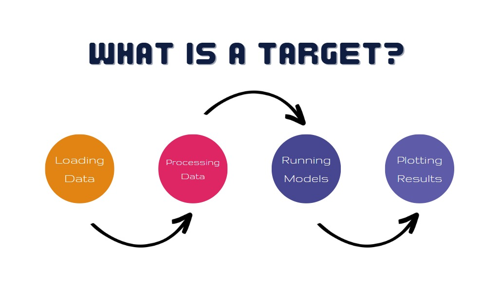

Why you should use Targets:
What you will learn in this workshop:
tar_script() , tar_edit()and
tar_target()tar_visnetwork()
& tar_manifest()tar_make()tar_outdated()tar_read()and tar_load()A pipeline contains tasks to prepare datasets, run models, and summarize results for a business deliverable or research paper. The methods behind these tasks are user-defined R functions that live in R scripts, ideally in a folder called “3-R/” in the project. The tasks themselves are called “targets”, and they run the functions and return R objects. The targets package orchestrates the targets and stores the output objects to make your pipeline efficient, painless, and reproducible. -Source

Before we get started please run this chunk to load packages and delete any existing targets.
pacman::p_load(kableExtra,
tidyverse,
targets,
nycflights13,
modelsummary
)
df<-nycflights13::flights
#loading custom functions for the analysis
source("3-R/1-functions.R")
#loading scripts necessary for the quiz in workshop
source("3-R/4-answers_to_questions.R")
source("3-R/5-quiz.R")
#getting our data to the file
write.csv(df,"2-data\\nyc_flights.csv", row.names = FALSE)
tar_destroy() # Start fresh, write 1 on the prompt in your console The commands of your targets will depend on the functions from
1-functions.Rmd. For the exercises below, they are in
3-R/1-functions.R. Take a quick glance at
3-R/functions.R familiarize yourself with the code
base.
The first version of the pipeline consists of three targets, or steps of computation. Our first targets do the following:
These steps are defined as custom functions in the
1-functions.Rmd
_targets.R fileTo initiate our targets, we express the computation in a special
configuration file called _targets.R which has to be at the
project’s root directory. This file is necessary to:
tar_target(). The
_targets.R script must always end with a list of target
objects.You would create this file from scratch using the
tar_script() command.
We have prepared and initial file for you here which you will edit
throughout the workshop. Run the following code chunk to put our
prepared _targets.R file for this chapter in your working
directory.
file.copy("3-R/2-initial_targets.R", "_targets.R", overwrite = TRUE)Now, open _targets.R in the RStudio for editing.
Exercises later in this chapter will ask you to make changes to this
file.
tar_edit()## • Edit '_targets.R'tar_visnetwork() &
tar_manifest()The targets package detects the relationships between
targets automatically using static code analysis.
tar_visnetwork() includes functions in the dependency
graph, as well as color-coded status information.
tar_visnetwork()## ── Attaching packages ─────────────────────────────────────── tidyverse 1.3.2 ──
## ✔ ggplot2 3.3.6 ✔ purrr 0.3.5
## ✔ tibble 3.1.8 ✔ dplyr 1.0.10
## ✔ tidyr 1.2.1 ✔ stringr 1.4.1
## ✔ readr 2.1.2 ✔ forcats 0.5.2
## ── Conflicts ────────────────────────────────────────── tidyverse_conflicts() ──
## ✖ dplyr::filter() masks stats::filter()
## ✖ dplyr::lag() masks stats::lag()
##
## Please cite as:
##
## Hlavac, Marek (2022). stargazer: Well-Formatted Regression and Summary Statistics Tables.
## R package version 5.2.3. https://CRAN.R-project.org/package=stargazer
##
## Warnmeldung:
## Paket 'targets' wurde unter R Version 4.2.2 erstellt While tar_manifest() provides a dataframe of your
targets and its meta data e.g. name , R-command that runs it or its
deployment priority.
tar_manifest()## ── Attaching packages ─────────────────────────────────────── tidyverse 1.3.2 ──
## ✔ ggplot2 3.3.6 ✔ purrr 0.3.5
## ✔ tibble 3.1.8 ✔ dplyr 1.0.10
## ✔ tidyr 1.2.1 ✔ stringr 1.4.1
## ✔ readr 2.1.2 ✔ forcats 0.5.2
## ── Conflicts ────────────────────────────────────────── tidyverse_conflicts() ──
## ✖ dplyr::filter() masks stats::filter()
## ✖ dplyr::lag() masks stats::lag()
##
## Please cite as:
##
## Hlavac, Marek (2022). stargazer: Well-Formatted Regression and Summary Statistics Tables.
## R package version 5.2.3. https://CRAN.R-project.org/package=stargazer
##
## Warnmeldung:
## Paket 'targets' wurde unter R Version 4.2.2 erstellt tar_make()So far we have been working on Set-up …tar_make()
actually runs the pipeline. It creates reproducible process that
executes the targets in the _targets.R - file in the
correct order (see the dependency graph).
get_data <- function(file) {
read_csv(file, col_types = cols())
}tar_make()## ── Attaching packages ─────────────────────────────────────── tidyverse 1.3.2 ──
## ✔ ggplot2 3.3.6 ✔ purrr 0.3.5
## ✔ tibble 3.1.8 ✔ dplyr 1.0.10
## ✔ tidyr 1.2.1 ✔ stringr 1.4.1
## ✔ readr 2.1.2 ✔ forcats 0.5.2
## ── Conflicts ────────────────────────────────────────── tidyverse_conflicts() ──
## ✖ dplyr::filter() masks stats::filter()
## ✖ dplyr::lag() masks stats::lag()
##
## Please cite as:
##
## Hlavac, Marek (2022). stargazer: Well-Formatted Regression and Summary Statistics Tables.
## R package version 5.2.3. https://CRAN.R-project.org/package=stargazer
##
## • start target flights_file
## • built target flights_file [0.19 seconds]
## • start target flights_data
## • built target flights_data [1.01 seconds]
## • start target run_lm
## • built target run_lm [0.27 seconds]
## • start target metrics
## • built target metrics [11.86 seconds]
## • end pipeline [22.2 seconds]
## Warnmeldung:
## Paket 'targets' wurde unter R Version 4.2.2 erstellt tar_read()and
tar_load()There are other functions to access the targets and work with them in R or to report them.
tar_read() reads a targets return value from, its file.
For dynamik files it returns their path.
tar_read(run_lm)##
## Call:
## lm(formula = y ~ x1, data = data)
##
## Coefficients:
## (Intercept) x1
## -5.90 1.02tar_read() is useful to assign the target to a new
object in case you want to work with it in R.
linear_model<-tar_read(run_lm)
mod_metrics(linear_model)| Model 1 | |
|---|---|
| (Intercept) | -5.899 |
| (0.033) | |
| x1 | 1.019 |
| (0.0008) | |
| Num.Obs. | 327346 |
| R2 | 0.837 |
| R2 Adj. | 0.837 |
| AIC | 2822272.7 |
| BIC | 2822304.8 |
| Log.Lik. | -1411133.361 |
| RMSE | 18.03 |
tar_load() loads the return values of a given target
from its storage in _targets/objects.
tar_load(run_lm)tar_outdated()tar_outdated() checks the dependencies and data of
targets and returns a list of outdated targets. If it returns 0 all our
targets are up to date.
tar_outdated()## ── Attaching packages ─────────────────────────────────────── tidyverse 1.3.2 ──
## ✔ ggplot2 3.3.6 ✔ purrr 0.3.5
## ✔ tibble 3.1.8 ✔ dplyr 1.0.10
## ✔ tidyr 1.2.1 ✔ stringr 1.4.1
## ✔ readr 2.1.2 ✔ forcats 0.5.2
## ── Conflicts ────────────────────────────────────────── tidyverse_conflicts() ──
## ✖ dplyr::filter() masks stats::filter()
## ✖ dplyr::lag() masks stats::lag()
##
## Please cite as:
##
## Hlavac, Marek (2022). stargazer: Well-Formatted Regression and Summary Statistics Tables.
## R package version 5.2.3. https://CRAN.R-project.org/package=stargazer
##
## Warnmeldung:
## Paket 'targets' wurde unter R Version 4.2.2 erstellt ## character(0)In the targets scrip you can also specify a file as a target. In fact
that is what we did with the NYC-Flights data set with
format = "file" in tar_target(). This way any
changes to the data set should trigger the target and all targets that
depend on it to become outdated. tar_read() returns the
path for these types of targets [targets with ].
tar_read(flights_file)## [1] "2-data/nyc_flights.csv"#Questions 1. What do you see when you open
_targets.R using the chunk below?
tar_edit()## • Edit '_targets.R'A. A call to
source("3-changes/functions.R") to load our custom
functions.
B. A call to
tar_option_set() to declare the packages the targets need
when they run.
C. The full pipeline from
2-pipelines.Rmd at the very bottom of the file.
D. All the above.
answer_1_setup("E") # Give your own answer here.## [33m⚠[39m Please supply a single letter among the choices given.2. Which target runs first when running the pipeline with
tar_make().Why?
A. flights_data, because the rest of
the targets depend on it.
B.
flights_file, because the rest of the targets depend on
it.
C. flights_data, because it
appears first in _targets.R.
D.
flights_file, because it appears first in
_targets.R.
answer1_first("E") # Give your own answer here.## [33m⚠[39m Please supply a single letter among the choices given.Check the chunk below to see:
tar_make()## ── Attaching packages ─────────────────────────────────────── tidyverse 1.3.2 ──
## ✔ ggplot2 3.3.6 ✔ purrr 0.3.5
## ✔ tibble 3.1.8 ✔ dplyr 1.0.10
## ✔ tidyr 1.2.1 ✔ stringr 1.4.1
## ✔ readr 2.1.2 ✔ forcats 0.5.2
## ── Conflicts ────────────────────────────────────────── tidyverse_conflicts() ──
## ✖ dplyr::filter() masks stats::filter()
## ✖ dplyr::lag() masks stats::lag()
##
## Please cite as:
##
## Hlavac, Marek (2022). stargazer: Well-Formatted Regression and Summary Statistics Tables.
## R package version 5.2.3. https://CRAN.R-project.org/package=stargazer
##
## ✔ skip target flights_file
## ✔ skip target flights_data
## ✔ skip target run_lm
## ✔ skip target metrics
## ✔ skip pipeline [0.25 seconds]
## Warnmeldung:
## Paket 'targets' wurde unter R Version 4.2.2 erstellt 3. If you load the run_lm target from the
_targets/ data store using the tar_load()
function and print it. What do you observe?
A. A function.
B. A fitted lm
model.
C. A one-row data frame.
D. A plot objects.
answer1_inspect("E")## [33m⚠[39m Please supply a single letter among the choices given.1. Add a plot target and visualize your new target dependencies.
tar_edit()# write your code here2.Delete last row from the CSV file & check which targets are outdated and why.
library(tidyverse)
"2-data/nyc_flights.csv" %>%
read_csv(col_types = cols()) %>%
head(n = nrow(.) - 1) %>%
write_csv("2-data/nyc_flights.csv")A. All of them. targets notices it has
been a while since you ran the pipeline.
B. All of
them. The data file changed, and targets automatically
knows Data/nyc_flights.csv is a data file.
C. All of them. The data file changed, and the pipeline
is configured to automatically track data/churn.csv. The
pipeline tracks the data file because the churn_file target
returns the value "Data/nyc_flights.csv" and the call to
tar_target() has format = "file".
D. None of them, because
Data/nyc_flights.csv is neither a target nor a function in
the global environment.
answer1_outdated("E")## [33m⚠[39m Please supply a single letter among the choices given.Check using chunk below.
tar_outdated()## ── Attaching packages ─────────────────────────────────────── tidyverse 1.3.2 ──
## ✔ ggplot2 3.3.6 ✔ purrr 0.3.5
## ✔ tibble 3.1.8 ✔ dplyr 1.0.10
## ✔ tidyr 1.2.1 ✔ stringr 1.4.1
## ✔ readr 2.1.2 ✔ forcats 0.5.2
## ── Conflicts ────────────────────────────────────────── tidyverse_conflicts() ──
## ✖ dplyr::filter() masks stats::filter()
## ✖ dplyr::lag() masks stats::lag()
##
## Please cite as:
##
## Hlavac, Marek (2022). stargazer: Well-Formatted Regression and Summary Statistics Tables.
## R package version 5.2.3. https://CRAN.R-project.org/package=stargazer
##
## Warnmeldung:
## Paket 'targets' wurde unter R Version 4.2.2 erstellt ## [1] "flights_file" "metrics" "run_lm" "flights_data"3. Open R/1-functions.R and change the plot
function, specifically change “c = ‘red1’” argument.
file.edit('3-R/1-functions.R')Rerun the pipeline.
tar_make()## ── Attaching packages ─────────────────────────────────────── tidyverse 1.3.2 ──
## ✔ ggplot2 3.3.6 ✔ purrr 0.3.5
## ✔ tibble 3.1.8 ✔ dplyr 1.0.10
## ✔ tidyr 1.2.1 ✔ stringr 1.4.1
## ✔ readr 2.1.2 ✔ forcats 0.5.2
## ── Conflicts ────────────────────────────────────────── tidyverse_conflicts() ──
## ✖ dplyr::filter() masks stats::filter()
## ✖ dplyr::lag() masks stats::lag()
##
## Please cite as:
##
## Hlavac, Marek (2022). stargazer: Well-Formatted Regression and Summary Statistics Tables.
## R package version 5.2.3. https://CRAN.R-project.org/package=stargazer
##
## • start target flights_file
## • built target flights_file [0.18 seconds]
## • start target flights_data
## • built target flights_data [0.97 seconds]
## • start target run_lm
## • built target run_lm [0.2 seconds]
## • start target metrics
## • built target metrics [12.75 seconds]
## • end pipeline [22.89 seconds]
## Warnmeldung:
## Paket 'targets' wurde unter R Version 4.2.2 erstellt Which targets ran? Why?
A. None. No target directly calls
plotting.
B. None. The model
definition did not change much.
C.
run_lm, as plotting depends on it.
D.
Only plotting as no other targets depend on it.
6. Make a meaningless change to the modeling in the Functions.RMD [eg. delete a white space or add an empty line]
file.edit('3-R/1-functions.R')Which targets will re-run and Why?
A. run_lmand plotting,as
the run_lmodel() function changed, which affects all these
targets.
B. None. tar_make() ignores
trivial changes like comments and white space.
C.
None. tar_make() ignores all changes to functions.
D. None. No target directly calls
run_model().
answer1_trivial("E")## [33m⚠[39m Please supply a single letter among the choices given.Check using chunk below.
tar_outdated()## ── Attaching packages ─────────────────────────────────────── tidyverse 1.3.2 ──
## ✔ ggplot2 3.3.6 ✔ purrr 0.3.5
## ✔ tibble 3.1.8 ✔ dplyr 1.0.10
## ✔ tidyr 1.2.1 ✔ stringr 1.4.1
## ✔ readr 2.1.2 ✔ forcats 0.5.2
## ── Conflicts ────────────────────────────────────────── tidyverse_conflicts() ──
## ✖ dplyr::filter() masks stats::filter()
## ✖ dplyr::lag() masks stats::lag()
##
## Please cite as:
##
## Hlavac, Marek (2022). stargazer: Well-Formatted Regression and Summary Statistics Tables.
## R package version 5.2.3. https://CRAN.R-project.org/package=stargazer
##
## Warnmeldung:
## Paket 'targets' wurde unter R Version 4.2.2 erstellt ## character(0)This tutorial drew heavily on the Materials provided by Will Landau the creator of Targets.
Helpful resources:
Styling and Structure of the RMD have drawn on resources produced by Tom Arendt and Lisa Oswald produced for the Intro to Data Science Labs in 2021/22.
A work by Maria Jose Lee & Fabian Metz
Prepared for Intro to Data Science, taught by Simon Munzert